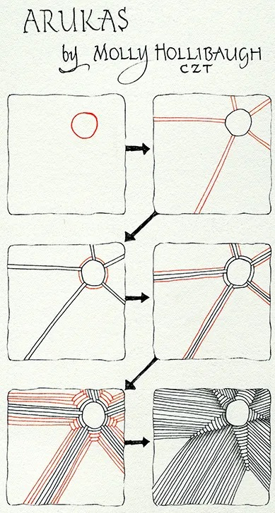
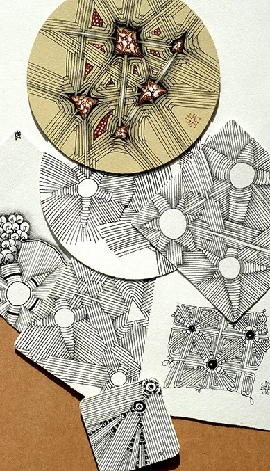

Molly寫道：
隨著時間的流逝，發現一個神奇的新圖樣似乎是更具有挑戰性。我們並不是花太多時間在尋找新圖樣，相反的，它們似乎是意外降臨在我們身上。
有時候我們會被身處的某些事物所震撼，然後花些時間來解構它。我們可能會得到一個新的想法，或者在畫禪繞中偶然發現了一些東西。
我發現我所發想的大多數圖樣都是以後者(畫禪繞中偶然發現)的方式發生的。最近，當我在一個相當冗長的會議電話中，正畫著禪繞時（這有助於讓我在整個通話期間集中專注力），我在嘗試畫球體時發生了這種情況，因為最近我對它們非常著迷。
我不太記得是怎麼發生的，但是我發現自己處在這種來回的光環節奏中。很快，一個「星星」誕生了……我是說，一個圖樣出現了。我立刻想到了這個名字，我覺得這可能與我使用的筆有關。（！）
花櫻是一個美麗、多用途且非常上手的圖樣。
我們在最近的CZT seminars上介紹了這個圖樣。這是分解步驟和我們展示的一些範例。

花櫻 非常喜歡圖樣變化！例如，你可以嘗試增加或減少剛開始的輻射線數量。
正如你在上面所看到的圖樣變化，你還可以：
- 使用多個一開始畫的圓圈（請確保當你在進行時每條輻射線和圓圈的光環都有完成）。
- 添加墨水填充和閃爍。
- 使用螺旋線條。
- 使用其他初始形狀。
- 探索並玩得愉快！
這裡還有一些圖樣變體：

玩得愉快！
我們期待看到你的作品。
記住……如有疑問，加光環 AURA。 （這就是我們的孫子Ramsey提醒我們的！）
|